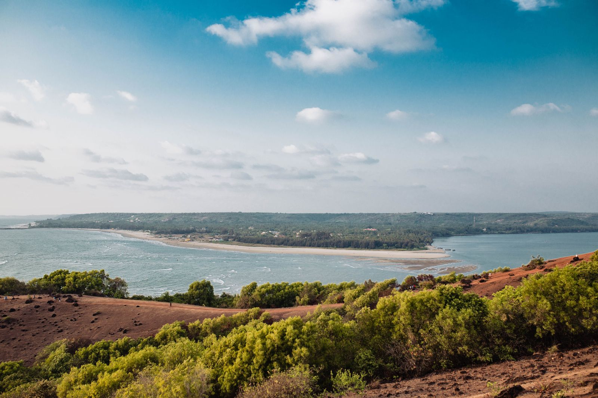

The short answer: Goa is one of India's strongest second-home markets, and Delhi-NCR is its single largest source of buyers — but the rental yields you see advertised (8–15%) are gross and optimistic. After management fees, commissions and a seasonal rental calendar, a well-run North Goa villa plot realistically nets closer to 3–5%. Buy Goa for the lifestyle-plus-appreciation combination, structure it to earn, and go in with clear eyes on the numbers.
North or South? They are different investments
This is the first real decision, and the two halves of Goa serve different goals:
| North Goa | South Goa | |
|---|---|---|
| Best for | Short-stay rental income (Airbnb-style), appreciation | Lifestyle use, quieter living, lower entry |
| Rental market | Deeper, busier, more year-round demand | Shallower and more seasonal in pockets |
| Entry prices | Higher — Assagao, Anjuna, Morjim command premiums | More reasonable; less of the sharp appreciation seen up north |
| The trade-off | You pay up for liquidity and yield | You pay less, but income is thinner |
For a Delhi buyer who wants the plot to work — earn while it appreciates — North Goa usually wins. For one who primarily wants a personal retreat that may hold value, South Goa can be the smarter, calmer buy.
The yield reality (read this twice)
The gap between advertised and actual returns is where Delhi buyers get disappointed:
- Advertised gross yields for North Goa villas run 8–12%, sometimes quoted at 12–15%.
- Net yields, after platform commissions, management and the seasonal calendar, land nearer 3–5% on a well-managed property.
- South Goa income is typically lower still (~3–4%) outside peak pockets.
The appreciation case is often the stronger half of the return — especially along the Mopa / Pernem corridor around the new airport, described as Goa's fastest-growing zone. Villa plots in Arambol–Morjim–Mandrem–Asvem have been quoted in the ₹80 lakh–₹1.5 crore range.
Verify before you rely: most Goa yield and price figures come from developers and brokers. Ask for actual occupancy and net-of-cost numbers for the specific village and property before you believe any return.
The honest case against a Goa plot
- Net yields are modest. If income is your main goal, 3–5% net may underwhelm versus the brochure.
- Seasonality is real. Some southern beaches rent well only a few months a year.
- Management is non-optional. A remote Delhi owner needs a trustworthy on-ground manager; the "privacy without the hassle" promise costs money and erodes yield.
- Title and tenure in Goa need care. Goan land records, communidade land, and conversion status carry quirks a mainland buyer won't expect.
Diligence that protects a remote buyer
- Title & tenure: confirm clear, marketable title; watch for communidade (community) land and tenanted land.
- Conversion (sanad): verify the land is converted for your intended use (e.g., settlement) — not agricultural.
- Zone & CRZ: coastal plots may fall under Coastal Regulation Zone limits that cap or bar construction.
- RERA: check registration where it applies to the project or layout.
- NRI route: NRIs can buy residential/commercial property under FEMA, with funds routed through NRE/NRO/FCNR accounts — confirm eligibility and routing with a FEMA-literate advisor.
Where Goa fits for a Delhi-NCR portfolio
Goa is the lifestyle-and-appreciation corner of a portfolio — a plot you'll use, let, and hold. Treat the rental income as a useful offset to carrying cost, not the core of the thesis; let appreciation (particularly near Mopa) and your own enjoyment do the heavy lifting. Buy in a location with genuine year-round demand, structure the management before you close, and underwrite it on net numbers.
Our posture: we'll only point you to a Goa parcel where the title is clean, the conversion and CRZ position are clear, and the honest net economics — not the brochure yield — make sense for how you intend to use it.
Frequently asked questions
Can an NRI buy a plot in Goa?
Yes. Under FEMA, NRIs can buy residential and commercial property (not agricultural land) in Goa, with payments routed through NRE, NRO or FCNR accounts. Confirm the land's use classification and your eligibility with a FEMA-literate advisor before paying.
What rental yield can I expect from a Goa villa?
Advertised gross yields of 8–15% are optimistic. After management fees, commissions and seasonality, a well-run North Goa property typically nets around 3–5%; South Goa is often lower. Always check actual occupancy and net figures for the specific property.
Is North or South Goa better for investment?
North Goa generally offers deeper rental demand and stronger appreciation (at higher entry prices); South Goa is cheaper and quieter but earns less rental income. North suits income-plus-growth; South suits lifestyle-first buyers.
How much does a villa plot in Goa cost?
In sought-after North Goa villages (Arambol, Morjim, Mandrem, Asvem), villa plots have been quoted around ₹80 lakh to ₹1.5 crore, varying widely by location, size and proximity to the coast. Verify current rates locally.